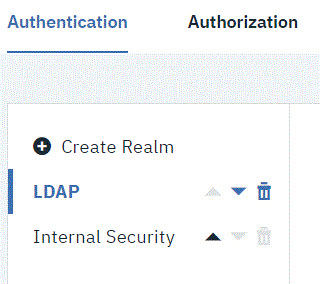

Authentication realms
Authentication realms manage users and determine user identity within authorization realms for the server.
Users can be created manually or imported from external systems, such as LDAP. Authentication is determined following the hierarchy of realms that is displayed on the Authentication tab. In the following figure, authentication is first determined in the Internal Security realm followed by the LDAP realm. A user who is listed in the LDAP realm can have different authorizations from those in the other realms.

If you have a number of authentication realms, you can reorder them by using the operation tools. Each realm can be moved up to a higher priority, moved down, or deleted by using the operation tools.
For information about authorization realms, see Authorization realms.